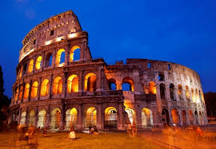
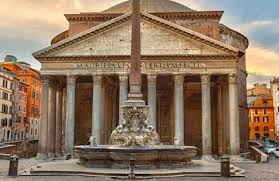
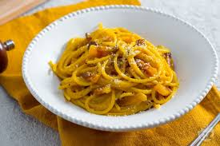
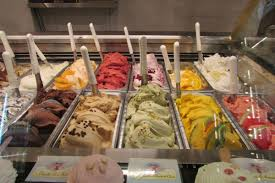

Atrações Imperdíveis
- 

- 
Coliseu de Roma Patrimônio histórico mundial revela a habilidade e as diversas técnicas utilizadas pelos arquitetos, engenheiros e construtores da Roma Antiga. É, portanto, um dos maiores exemplos da arquitetura romana.
Vaticano é uma referência a uma formação de colina existente no território de Roma (Itália).
Um dos maiores edifícios do mundo antigo, suas proporções e estrutura representam a concepção religiosa dos Romanos.
Sua construção remonta à Roma Antiga, quando o aqueduto Aqua Virgo, construído em 19 a.C. pelo general Marco Vipsânio Agripa, começou a fornecer água para os banhos termais da cidade.
Gastronomia
Experimente pratos típicos como:
- Pasta alla Carbonara 
- Pizza al Taglio
- Gelato 
Dicas de Viagem
Algumas dicas úteis para sua visita:
- Use calçados confortáveis.
- Compre ingressos antecipados para as atrações.
- Explore os bairros menos turísticos.